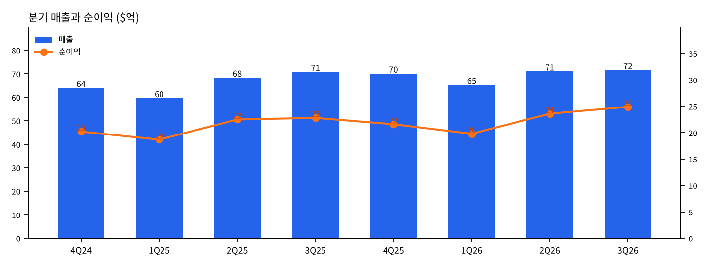
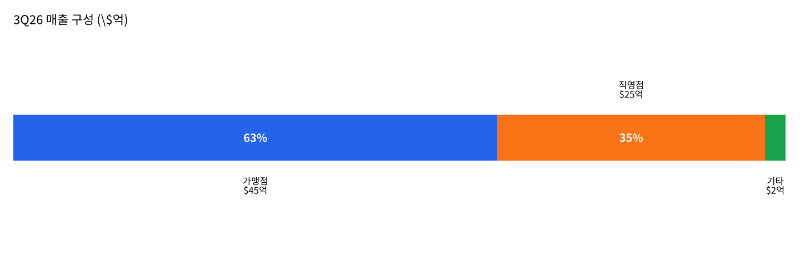
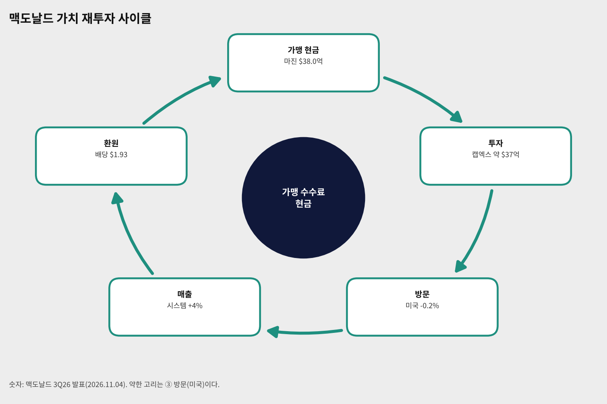

맥도날드는 매장 약 95%를 가맹점에 맡기고 임대료·로열티를 받는 구조다. 이번 분기 해외가 미국의 부진을 메웠다.
| 항목 | 내용 |
|---|---|
| 종목 | McDonald's (MCD) · NYSE · 소비재(외식 프랜차이즈) · 일리노이 시카고 |
| 멀티플 | PER·P/S는 08·09 항목 표 참조 |
| 최근 분기(3Q26) | 매출 $71.57억, 조정 EPS $3.57 |
| 가맹 비중 | 전 세계 매장의 약 95% |
| 직원 수 | 약 150,000명(트레이딩뷰) |
| 직책 | 인물 | 역할·특징 |
|---|---|---|
| 회장·CEO | 크리스 켐친스키(Chris Kempczinski) | '이번 분기도 전 세계 성장을 이뤘다'며 다음 성장 장을 위한 투자를 강조 |
| CFO | 이안 보든(Ian Borden) | (확인 필요) |
경영 스타일: '가맹 모델 + 가치 메뉴·디지털'. 입문형 가치 메뉴와 디지털 쿠폰으로 고객 방문을 되살리는 전략이다.
로열티 앱·디지털 프로모션으로 방문 빈도를 높인다.
매장 리모델링과 출점 확대를 다년 전략으로 추진한다.
다음 실적발표는 세 가지 질문에 답하는 자리다.
1. 미국 동일점포가 플러스를 유지하나?
2. 2027 식자재 물가를 가격 인상으로 흡수하나?
3. 출점 속도가 유지되나?
한 줄 판정 규칙: 첫 질문(미국 동일점포)이 플러스를 유지하면 약한 고리(미국 방문 감소)가 풀린다.
일정: 4Q26 실적 발표는 트레이딩뷰 기준 2027.01.28(확인 필요).
| 분기 | 매출 | 순이익 | EPS | 조정 EPS | 특이 사항 |
|---|---|---|---|---|---|
| 4Q24 | $63.9억 | $20.2억 | 2.80 | 2.83 | |
| 1Q25 | $59.6억 | $18.7억 | 2.60 | 2.67 | |
| 2Q25 | $68.4억 | $22.5억 | 3.14 | 3.19 | |
| 3Q25 | $70.8억 | $22.8억 | 3.18 | 3.22 | |
| 4Q25 | $70.1억 | $21.6억 | 3.03 | 3.12 | |
| 1Q26 | $65.2억 | $19.8억 | 2.78 | 2.83 | |
| 2Q26 | $71.0억 | $23.6억 | 3.32 | 3.38 | |
| 3Q26 | $71.6억 | $24.9억 | 3.51 | 3.57 | 조정 EPS $3.57(+11%), 구조조정 비용 $0.06 제외 |
3Q26 매출 $71.6억(+1%), 순이익 $24.9억, GAAP EPS $3.51(+10%), 조정 EPS $3.57(+11%)(회사 발표 2026.11.04). 매출·순이익·EPS(GAAP 희석)는 트레이딩뷰 스캐너, 조정 EPS는 트레이딩뷰 실적 페이지의 Reported 값이다. 분기 정렬은 오래된 분기→최신이다.

흐름 요약: 최근 분기 매출은 $71.6억로 전년 동기 $70.8억 대비 +1.1%, 순이익은 $24.9억(전년 $22.8억)다. 최근 4분기 GAAP EPS는 $12.64, 조정 EPS는 $12.90다.
| 항목 | 내용 | 3Q26 금액 | 비고 |
|---|---|---|---|
| 가맹점 매출 | 임대료·로열티 | $44.87억 | +3% |
| 직영점 매출 | 회사 운영 매장 | $24.80억 | -3% |
| 기타(내 계산) | 총액 − 위 두 항목 | $1.9억 | 총 $71.57억 |

가맹점 매출이 총매출의 약 63%(내 계산)이고 가맹 마진은 전체 매장 마진의 약 90%다(회사 설명).
맥도날드는 '고객에게 맛있고 값어치 있는 식사를 제공하고 가맹점주와 함께 성장하는 것'을 목표로 한다.
| 축 | 내용 |
|---|---|
| 가치 | 입문형 가치 메뉴 |
| 디지털 | 로열티 앱·쿠폰 |
| 성장 | 출점 순증 약 2,100개 |

| 이동평균 | 값 | 종가 대비 | 위치 |
|---|---|---|---|
| 5일선 | $274.02 | +0.0% | 종가 위 |
| 20일선 | $266.97 | +2.6% | 종가 위 |
| 50일선 | $251.44 | +9.0% | 종가 위 |
| 100일선 | $260.18 | +5.3% | 종가 위 |
| 200일선 | $280.80 | -2.4% | 종가 아래 |
52주 고가 $341.75(2026-03-02)·저가 $229.20(2026-10-05) 범위에서 종가 $274.03는 5일선, 20일선, 50일선, 100일선을 웃돌고 200일선은 밑돈다.
| 규칙 | 기준 | 현재 값 | 신호 |
|---|---|---|---|
| 장기 추세 필터 | 종가 vs 200일선 | $274.03 < $280.80 | 매도 |
| 중장기 교차 | 50일선 vs 200일선 | $251.44 < $280.80 | 매도 |
| 단기 교차 | 20일선 vs 50일선 | $266.97 > $251.44 | 매수 |
| 돈키언 채널 | 55일 고가 $283.53 / 저가 $229.20 | 중간값 $256.37 위 | 매수 |
| 1개월 모멘텀 | 21거래일 수익률 | +11.2% (기준 $246.52) | 매수 |
| 3개월 모멘텀 | 63거래일 수익률 | +1.8% (기준 $269.13) | 매수 |
| 6개월 모멘텀 | 126거래일 수익률 | -2.2% (기준 $280.27) | 매도 |
| 12개월 모멘텀 | 252거래일 수익률 | -10.1% (기준 $304.90) | 매도 |
| 종합 (8개 평균) | +0.00 | 중립 |
해석: 매수 신호 4개(단기 교차, 돈키언 채널, 1개월 모멘텀, 3개월 모멘텀), 매도 신호 4개(장기 추세 필터, 중장기 교차, 6개월 모멘텀, 12개월 모멘텀). CTA 점수 +0.00(중립). 14일 ATR $7.33 (2.7%), 52주 고가 $341.75 · 저가 $229.20.
| 가격 | 기준 | 무엇이 바뀌나 |
|---|---|---|
| $304.90 | 12개월 모멘텀 기준가 | 종가가 이 가격 위면 12개월 신호 매수 |
| $283.53 | 55일 고가 | 돌파 시 채널 상단 갱신 |
| $280.80 | 200일선 | 종가가 이 선 위/아래인지로 장기 추세 신호가 바뀜 |
| $280.27 | 6개월 모멘텀 기준가 | 종가가 이 가격 위면 6개월 신호 매수 |
| $269.13 | 3개월 모멘텀 기준가 | 종가가 이 가격 위면 3개월 신호 매수 |
| $256.37 | 돈키언 중간값 | 55일 채널 중간값 위/아래로 신호가 바뀜 |
| $246.52 | 1개월 모멘텀 기준가 | 종가가 이 가격 위면 1개월 신호 매수 |
| $229.20 | 55일 저가 | 이탈 시 채널 하단 갱신 |
가격 수준은 신호가 바뀌는 기준선일 뿐 진입·청산 가격 제안이 아니다. 20일/50일 교차는 이동평균 자체가 움직여 단일 가격으로 표시하지 않았다. 일봉·주봉은 종가 기준 직접 계산(고저 데이터 미사용)이다.
| 악재 요인 | 내용 | 강도 |
|---|---|---|
| 미국 방문 감소 | 동일점포 -0.2%, 고객 수 감소 | 중간 |
| 2027 식자재 물가 | 중간 한 자릿수 상승 예상 | 중간 |
| 출점 목표 하향 | 2,600 → 2,500개 | 참고 |
| 중국 부진 | 개발 라이선스 시장 중 중국 마이너스 | 중간 |
| 티커 | 회사 | PER(TTM) | PEG | P/S | EPS 성장(YoY) |
|---|---|---|---|---|---|
| MCD | 맥도날드 | 21.7배 | 2.76 | 6.96배 | +8% |
| SBUX | 스타벅스 | 49.4배 | 1.37 | 3.25배 | +36% |
| YUM | 얌 브랜즈 | 12.9배 | 0.09 | 5.03배 | +143% |
| CMG | 치폴레 | 34.6배 | – | 3.57배 | -6% |
비교 결론: 맥도날드 PER은 치폴레보다 낮고 얌 브랜즈보다 높다.
맥도날드는 부채가 크지만 가맹 임대·로열티 현금흐름으로 감당한다.
| 지표 | 값 | 출처 | 해석 |
|---|---|---|---|
| 현금·단기투자 | $12억 | 트레이딩뷰 스캐너(최근 분기) | |
| 총부채 | $545억 | 트레이딩뷰 스캐너(최근 분기) | |
| 순부채(부채−현금) | $533억 | 내 계산 | 현금 대비 부채 부담 |
| 잉여현금흐름(TTM) | $75억 | 트레이딩뷰 스캐너 | |
| TTM 매출 | $278억 | 트레이딩뷰 스캐너 |
| 기준 | 매출 | P/S | 비고 |
|---|---|---|---|
| 내 계산(종가 ÷ 최근 4분기 매출 합계) | $277.9억 | 6.96배 | 시총은 정렬용 데이터에서만 사용 |
| 동종(트레이딩뷰) | – | SBUX 3.25배 · YUM 5.03배 · CMG 3.57배 | 11.19 |
해석: P/S 7.03배는 스타벅스(3.25배)보다 높다.
EBITDA는 영업활동의 현금 창출력을 보는 지표이고, PEG는 PER을 EPS 성장률로 나눈 값이다. EBITDA·FCF는 트레이딩뷰 TTM 값이다.
| 지표 | 값 | 산출 |
|---|---|---|
| EBITDA(TTM) | $151억 | 트레이딩뷰 스캐너 |
| EBITDA 마진 | 54.3% | EBITDA ÷ TTM 매출(내 계산) |
| FCF 마진 | 27.0% | FCF ÷ TTM 매출(내 계산) |
| PER(GAAP TTM) | 21.7배 | $274.03 ÷ $12.64 |
| PER(조정 TTM) | 21.2배 | $274.03 ÷ $12.90 |
| 방식 | PER | EPS 성장률 | PEG | 판정 |
|---|---|---|---|---|
| GAAP EPS (TTM $12.64) | 21.7배 | +8% ($11.72 → $12.64) | 2.76 | 기준 초과 |
| 조정 EPS (TTM $12.90) | 21.2배 | +8% ($11.91 → $12.90) | 2.56 | 기준 초과 |
판정: GAAP EPS 기준 PEG 2.76 → 1.0 초과 PEG 기준은 1.0 이하 투자 적격, 0.5 이하 적극 매수다. EPS 성장률은 최근 4분기 EPS 합계를 직전 4분기 합계와 비교한 값(내 계산)이고, 일회성 항목이 있으면 조정 EPS 행을 함께 본다.

맥도날드의 사이클은 가맹 현금 → 리모델링·출점 → 방문 → 매출 → 환원이다.
| 고리 | 현재 숫자 | 고리 강도 | 약해지는 신호 |
|---|---|---|---|
| ① 가맹 현금 | 가맹점 마진 $38.0억(+3%) | 강함 | 가맹점 부담 |
| ② 투자 | 설비투자 약 $37억 | 진행 중 | 리모델링 비용 |
| ③ 방문 | 미국 -0.2%, 9월 플러스 | 회복 중 | 고객 수 |
| ④ 매출 | 시스템 매출 +4% | 강함 | 해외 편중 |
| ⑤ 환원 | 분기 배당 $1.93(+4%) | 강함 | 투자 우선 |
사이클의 특징: 가장 약한 곳은 ③ 방문이다. 미국 고객 수가 줄고 있다.